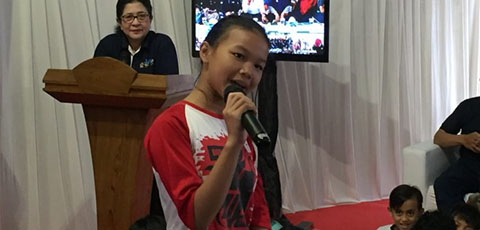

Menkes: Pola Hidup Bersih dan Sehat Mulai Sejak Kecil
Senin, 9 September 2019 | 09:33 WIB |
Oleh Putri,diterbitkan oleh Gusti Andry

Jakarta, InfoPublik - Kementerian Kesehatan RI peringati Hari Anak Nasional bersamaan dengan Hari Perumahan
Nasional di Rumah Susun (Rusun) Jatinegara Barat, Jakarta, Minggu (8/9). Menteri Kesehatan RI Nila Moeloek
mengajari anak-anak penghuni Rusun untuk hidup bersih dan sehat.
Kepada anak-anak Menteri Nila mengatakan pola hidup di tempat sebelumnya, yakni Kampung Pulo, jangan di bawa
ke tempat tinggal yang baru saat ini. Buang sampah, bersosialisasi, mengolah makanan, dan membuang limbah
rumah tangga semuanya sudah ada aturannya.
“Pola hidup bersih dan sehat harus diterapkan sejak kecil. Jangan jajan sembarangan untuk anak-anak dan ini
harus dipantau oleh orang tuanya. Anak-anak harus diberi makan sayur dan buah serta perbanyak makan ikan,”
kata Menteri Nila.
Hal yang paling mudah dilakukan adalah mencuci tangan sebelum memakan apapun. Kepada anak-anak Menteri Nila
menekankan untuk melakukan hal tersebut agar terhindar dari kuman yang membuat tubuh sakit.
Menteri Nila juga meminta anak-anak untuk bermain di luar, berlari, dan main bola. “Bermain jangan sampai di
dalam gedung karena akan mengganggu tetangga. Bermainlah di luar, lari sana sini menggerakkan tubuh kalian,”
kata Menteri Nila.
Ia berpesan untuk menjaga kebersihan diri dan lingkungan agar menjadi generasi penerus bangsa yang berkualitas.
“Dengan kita kerja sama kolaborasi, masa depan kita pasti berubah dan anak-anak kita harus berkualitas.
Peningkatan SDM harus dimulai dari sehat,” kata Menteri Nila.
s